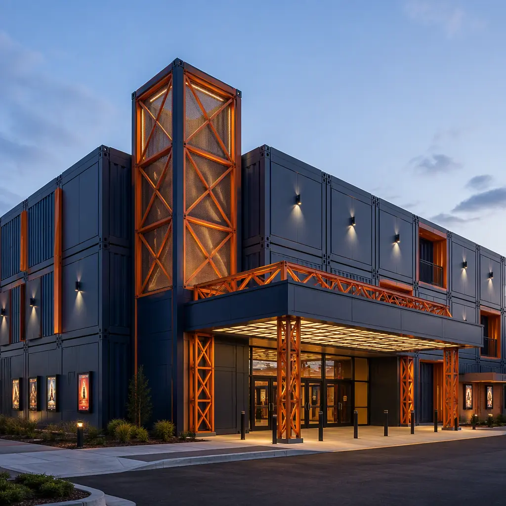
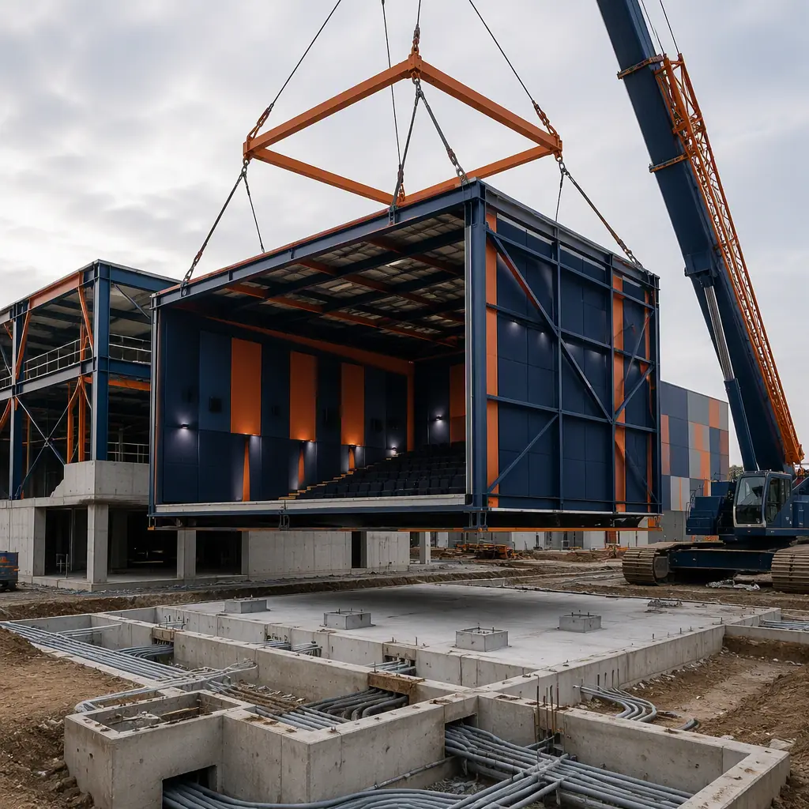
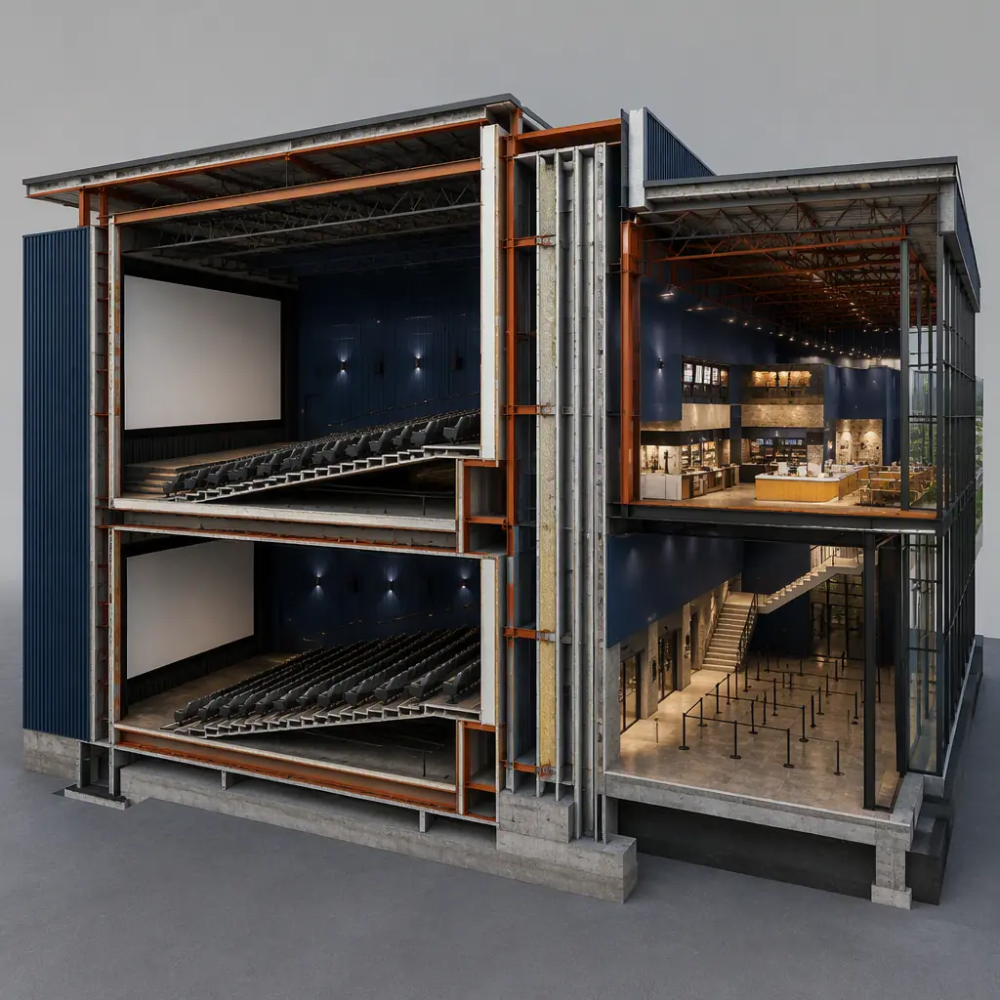
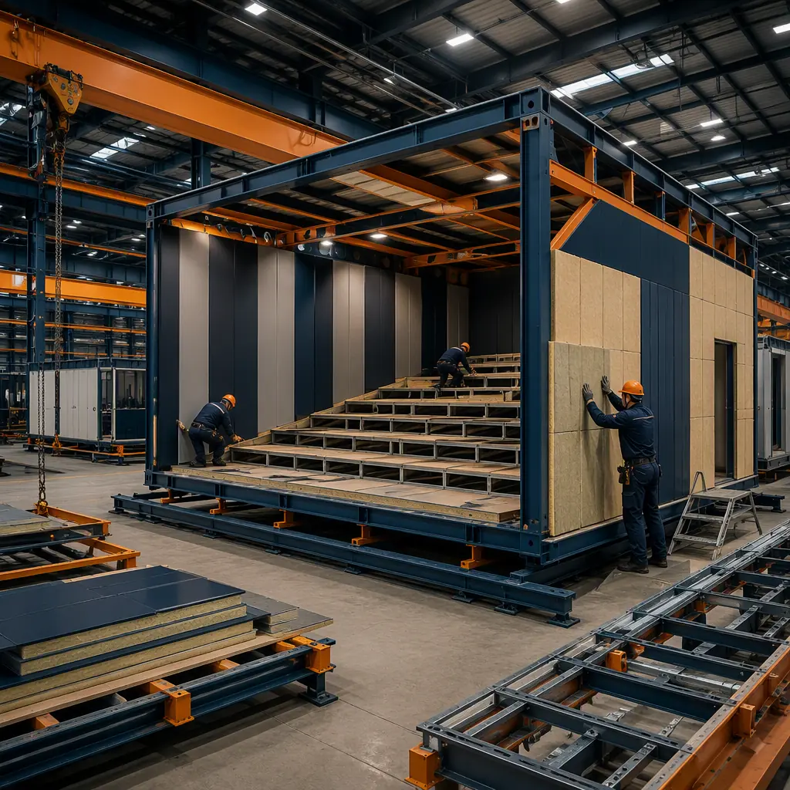

Global box office revenue rebounded to $33–34 billion in 2025, and the exhibition industry is investing again — but not in the suburban megaplex model of the 1990s. Theater chains are building smaller premium-format venues (8–14 screens), converting vacant big-box retail into cinemas, and adding dine-in auditoriums and luxury formats where construction speed directly controls revenue. Conventional cinema construction is among the slowest building types in commercial real estate: a 10-screen multiplex with raked floors, acoustic-rated walls, projection systems, and assembly-occupancy life safety typically takes 16–24 months and $250–$400 per square foot. Modular prefabricated construction compresses that program by manufacturing auditorium shells, lobby modules, and concession halls as factory-built steel-frame modules while site work proceeds in parallel — delivering a cinema building in 9–14 months with a 20–25% reduction in building cost. This is the same concurrent-production model that accelerates modular sports stadium and arena construction.

Why Cinema Construction Is Slow and Expensive Conventionally
Cinemas combine the acoustical performance of a recording studio with the occupant loads of a sports venue — a combination that penalizes conventional delivery:
- Raked floors are a structural specialty. Every auditorium requires a sloped structural floor (typically 1:12 to 1:8 pitch) supporting stepped seat platforms, plus under-seat HVAC distribution and screen-wall steel. Conventionally these are cast or built in place over months; factory-built auditorium modules arrive with the rake structure, seat platforms, and under-seat ducting pre-installed. The same prefabricated structural logic serves stadium and arena construction.
- Acoustical isolation is unforgiving. Adjacent auditoriums must achieve sound isolation of STC/NIC 60 or better — a standard that demands double-wall assemblies, staggered studs, and floating floor systems. Field-built party walls routinely leak sound through penetrations and ceiling plenums; factory-built acoustic modules are assembled and tested in controlled conditions before shipment. Acoustic wall assembly design is detailed in our modular acoustic performance guide.
- MEP loads are concentrated and precise. Projection rooms need dedicated HVAC and cooling for laser projectors, auditoriums need 12–15 air changes per hour with low-noise ducting (NC-25 or better), and concession areas need commercial kitchen ventilation. Factory-built modules arrive with these systems pre-installed and balanced, eliminating field commissioning delays that conventionally add 2–4 months.
- Assembly occupancy drives egress and fire protection. Cinemas are IBC Assembly Group A-1 occupancies, with occupant loads of 2,000–4,500 per screen complex, exit requirements calculated on the largest auditorium, and fire-rated separation between auditoriums and public spaces. Factory fabrication with third-party inspection at the point of manufacture compresses the field inspection and approval phase that conventionally adds 3–6 months to cinema projects.


What Gets Factory-Built — The Cinema Module Package
The modular cinema building divides into functional modules that can be manufactured, tested, and shipped independently:
Auditorium Modules
Each auditorium is delivered as a factory-built steel module (or paired modules for larger screens) with the raked floor structure, stepped seat platforms, screen wall framing, acoustic wall panels, and under-seat HVAC ducting pre-installed. Auditoriums of 100–400 seats fit within standard module dimensions; larger premium-format houses combine two or three modules side by side with a factory-fabricated acoustic party wall between them. A conventional auditorium build takes 4–6 months on site; factory production compresses that to 6–8 weeks, with the room arriving acoustically sealed and ready for screen and seating installation.
Lobby, Concession, and F&B Modules
The public front-of-house — lobby, box office, concession stands, and dine-in kitchens — is delivered as modules with finishes, counter equipment, and commercial kitchen rough-in pre-installed. Concession modules arrive with point-of-sale infrastructure, display cases, and kitchen ventilation ducting in place, compressing the fit-out that conventionally takes 3–5 months. Food and beverage integration in entertainment venues follows the same pattern we document for modular food hall construction.
Dine-In and Premium Format Auditoriums
The fastest-growing cinema segment — dine-in and luxury formats — adds kitchen and service requirements inside the auditorium footprint. Modular auditoriums for these formats arrive with in-room kitchen prep zones, service corridors behind seat rows, and enhanced HVAC for food-service ventilation pre-installed. Because the module is factory-built, the kitchen exhaust, fire suppression, and grease duct systems are installed and tested under controlled conditions rather than field-fabricated in a finished building — a compliance advantage that typically saves 2–3 months of permitting and inspection time. The food-service integration pattern is the same one we document for modular restaurant construction.
Projection, AV, and Back-of-House Modules
Projection rooms, AV server rooms, manager offices, and staff areas are built as separate modules with dedicated HVAC, fire suppression, and cable-tray infrastructure pre-installed. Factory-built projection modules arrive with the laser projector cooling loops, ventilation, and conduit pathways ready for equipment installation — eliminating the field-built rooms that delay cinema openings by 1–2 months. The equipment-integration approach parallels modular data center construction, where precision environments are factory-tested before arrival.

Acoustics Is the Core Engineering Problem
Audience experience — and the premium ticket pricing it supports — depends on sound isolation and room acoustics. Key parameters for modular cinema delivery:
- Party-wall isolation of STC/NIC 60+. Adjacent auditoriums are separated by factory-built double-wall assemblies with staggered steel studs, dual-layer gypsum, and mineral wool cavities — the same assembly families we document for modular acoustic performance. Because the wall is built and sealed in the factory, flanking paths through penetrations are controlled before the module ships.
- Background noise target NC-25 or lower. Auditorium HVAC is sized and ducted for low-velocity, low-noise air delivery with acoustic attenuators factory-installed in the module ceiling plenum — avoiding the field-measured attenuator retrofits that commonly push conventional cinema HVAC work past budget.
- Floating floors for impact isolation. Where auditoriums sit above public spaces or between floors, factory-built floating floor systems (resilient isolators under the concrete-topped deck) are installed in the module at the factory, where quality control is feasible, rather than on site where it is routinely compromised.
- Reverberation control in the room. Wall and ceiling treatments are factory-installed to hit the RT60 targets for cinema (typically 0.4–0.6 seconds for mid-size auditoriums), so the room sounds right on day one rather than after months of tuning.
The acoustic package is documented module by module — wall assembly drawings, test certificates for party-wall assemblies, and NC measurements for each HVAC zone — so the owner's acoustical consultant can sign off before the modules leave the factory rather than after they are installed on site. That documentation is the difference between a cinema that opens on schedule and one that spends its first months re-mediating sound leakage between screens.
Retail-to-Cinema Conversion — The Fastest-Growing Use Case
With US retail vacancy still elevated after the big-box contraction, cinema operators and developers are converting former department stores and discount retail spaces into entertainment anchors. Conversions are where modular delivery is most dramatically faster: the shell, roof, and core MEP already exist, so the module package — auditoriums, concession hall, and back-of-house — is delivered to the building and set inside the existing envelope, with the retail slab prepared for the raked-floor module bases. A conventional cinema conversion of a 60,000 sq ft retail box takes 14–20 months; modular conversion programs typically complete in 8–12 months, because the auditorium construction that conventionally happens inside the shell is instead happening in the factory. Conversion economics and adaptive-reuse strategy are covered in our guide to modular additions and expansions, and the logistics of delivering modules into an existing structure in modular transportation and logistics.
Compliance & Life Safety — Assembly Occupancy Codes
Cinemas are governed by IBC Assembly Group A-1 requirements, NFPA 101 life safety code, and local fire codes — with occupant load calculations based on fixed seating (one person per seat plus lobby and queue areas), exit capacity based on the largest auditorium, fire-rated separation between auditoriums and adjacent occupancies, and emergency lighting and signage throughout. Modular delivery supports compliance by enabling factory-documented fabrication — fire-rated assemblies certified by third-party labs, exit pathways and signage coordinated at module design stage, and sprinkler and alarm systems pre-installed and tested before shipment — while the compressed schedule reduces the period during which a partially built venue exposes the operator to revenue loss. For mixed-use cinema developments, permitting strategy is covered in our guide to permitting and zoning.
Multiplex Planning — Auditorium Clusters and Shared Infrastructure
A multiplex is not a collection of independent rooms — it is a cluster of auditoriums sharing lobby, concession, restroom, and back-of-house infrastructure, with the acoustic performance of the whole depending on how the cluster is organized. Modular planning makes the cluster explicit: auditorium modules are grouped around a factory-built spine module carrying the shared lobby, restrooms, and service corridor, with acoustic party walls between every adjacent pair. This cluster logic produces predictable ratios — a 10-screen complex typically allocates 55–65% of gross area to auditoriums, 15–20% to lobby and concessions, and the remainder to back-of-house — and because each module type is factory-standardized, the same cluster design can be repeated across a chain with site-specific variations limited to the entrance and shell. Repeatable cluster design is the same production-line logic that makes modular ROI analysis favorable for multi-venue operators, and the shared-spine approach mirrors how modular co-working and flexible office buildings organize shared amenities.
Cost Structure — Modular vs. Conventional Cinema Build
| Cost Category | Conventional (10-Screen, 45,000 sq ft) | Modular (10-Screen, 45,000 sq ft) |
|---|---|---|
| Building shell, raked floors & acoustic walls | $6.3–9.0M ($140–200/sq ft) | $5.0–7.2M ($110–160/sq ft) |
| HVAC, acoustics & projection cooling | $2.7–4.1M | $2.2–3.4M (factory-integrated) |
| Interiors, concession & F&B fit-out | $2.3–3.6M | $1.8–2.9M (pre-finished modules) |
| Life safety, egress & fire protection | $1.1–1.8M | $0.9–1.5M (factory-installed) |
| Field labor, temp facilities & weather risk | $1.4–2.3M | $0.5–0.9M |
| Total Build Cost | $13.8–20.8M | $10.4–15.9M |
The 20–25% building cost reduction compounds with 6–10 months of earlier opening — on a 10-screen venue generating $6–12M in annual box office and concession revenue, each month of earlier operation is worth $500,000–$1M, and the faster schedule captures the holiday release windows that drive 25–30% of annual box office. For a full treatment of modular project economics, see our 2026 modular cost guide and our developer's ROI analysis.
Is Modular Right for Your Cinema Project?
Modular cinema delivery delivers the strongest value for retail-to-cinema conversions (where the module package drops into an existing shell), multi-venue operators who can capture production-line repeatability across a chain, and projects with hard opening dates tied to film release schedules. For new-build multiplexes, a hybrid approach — modular auditoriums and public modules with a conventional lobby structure — delivers most of the schedule and acoustic benefits while preserving architectural freedom for the flagship entrance. For operators expanding into entertainment districts alongside other venue types, modular delivery converts the building program from the project's longest schedule risk into a parallel production stream — the same logic that accelerates esports and gaming venue construction, ice rink construction, and casino and gaming facility construction.